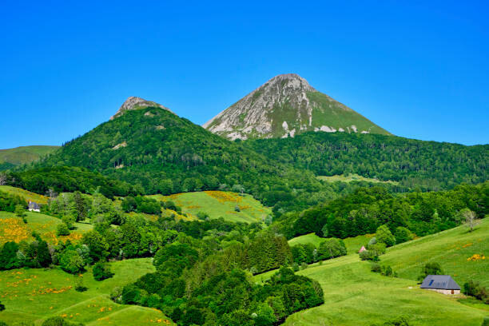

Accueil › Records
Les records des volcans
1 432 volcans actifs sont recensés dans le monde : entre le plus haut sommet et la plus petite éruption jamais observée, voici le palmarès des extrêmes volcaniques de notre planète.
Le tableau des records
Faites défiler le tableau horizontalement si nécessaire ; sur téléphone, chaque record s'affiche sous forme de fiche.
| Record | Catégorie | Détenteur | Valeur |
|---|---|---|---|
| Plus haut volcan | Hauteur totale | Mauna Kea, Hawaï | 10 230 m au-dessus du plancher océanique, pour une altitude de 4 207,5 m |
| Plus haut volcan | Altitude | Nevado Ojos del Salado, Chili | 6 887 m d'altitude |
| Plus grand volcan d'Europe | Superficie | Le Cantal, France | 2 700 km² et 70 km de diamètre |
| Plus grande éruption | Volume de matériaux éjectés | Toba, il y a 73 000 ans | 2 800 km³ |
| Plus petite éruption | Volume de matériaux éjectés | Forage géothermique à Hverarönd, Islande, 1977 | 1,2 m³ de basalte |
| Volcan le plus actif | Fréquence des éruptions | Le Kīlauea et le piton de la Fournaise | Une éruption environ tous les un an à un an et demi |
| Plus jeune volcan | Âge | Ardoukôba | Première éruption en novembre 1978 |
| Plus grand cratère volcanique terrestre | Dimensions | Toba, formé il y a 73 000 ans | 100 km de longueur sur 30 km de largeur |
| Plus grand nombre de victimes | Bilan humain | Tambora, sur l'île de Sumbawa, Indonésie, 1816 | 88 000 morts liés directement à l'éruption et 200 000 morts supplémentaires par famine |
| Éruption la plus bruyante | Intensité sonore | Krakatoa, Indonésie, le 27 août 1883 | Explosion entendue jusqu'à Rodrigues, à 500 km à l'est de l'île Maurice, soit à 4 811 km de l'éruption |
| Plus grand panache volcanique | Hauteur du panache | Hunga Tonga, aux Tonga, 2022 | 57 km de hauteur |
| Plus longue coulée de lave | Longueur | Undara, Australie | 160 km de longueur |

Le volcanisme en France
La France métropolitaine possède de nombreux volcans, aujourd'hui endormis ou éteints : la chaîne des Puys, le Cantal, le Mont-Dore, le massif de l'Aubrac ou encore l'Escandorgue.
Trois familles de volcans français
- Les volcans de type strombolien : cônes raides nés de projections de scories, comme les puys de la chaîne des Puys.
- Les volcans de type péléen : dômes de lave très visqueuse accumulée au sommet, comme le Puy de Dôme.
- Les volcans de type hawaïen : épanchements fluides formant de larges plateaux basaltiques, comme ceux de l'Aubrac.
En France, la surveillance du risque volcanique est assurée par l'Observatoire de Physique du Globe de Clermont-Ferrand.
À retenir en cinq points
- Le Mauna Kea est le plus haut volcan du monde depuis sa base : 10 230 m.
- Le Nevado Ojos del Salado, au Chili, est le plus haut volcan par son altitude : 6 887 m.
- L'éruption du Krakatoa de 1883 reste la plus bruyante jamais enregistrée : 4 811 km.
- Le Hunga Tonga a produit en 2022 le plus grand panache volcanique connu : 57 km.
- La plus longue coulée de lave jamais mesurée atteint 160 km à Undara, en Australie.